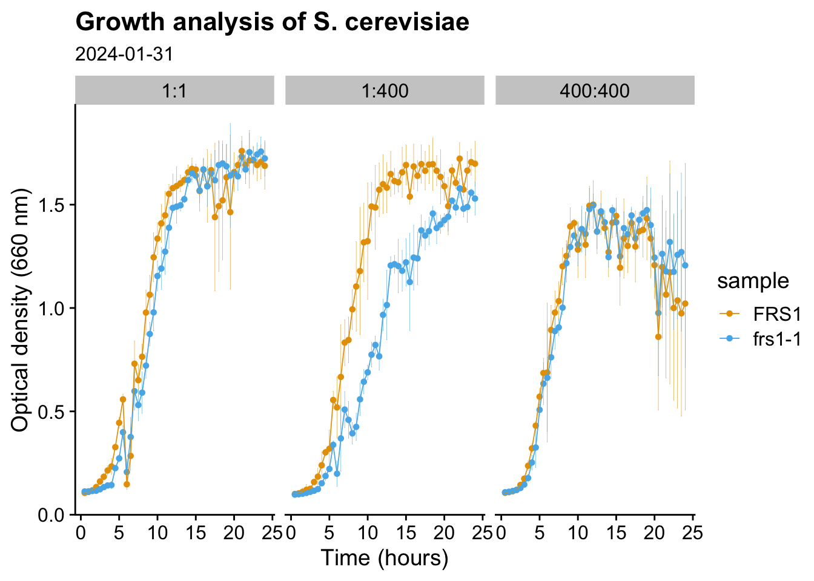

Code
library(tidyverse)
library(readxl)
library(fs)
library(cowplot)
library(ggokabeito)
library(here)
fname <- here("data/2024-01-31-growth-curve.xlsx")
plate_map <- tribble(
~ sample, ~ media, ~ rep, ~ well,
"blank", "1:1", 1, "B3",
"blank", "1:1", 2, "B4",
"blank", "1:1", 3, "C3",
"blank", "1:1", 4, "C4",
"blank", "1:400", 1, "D3",
"blank", "1:400", 2, "D4",
"blank", "1:400", 3, "E3",
"blank", "1:400", 4, "E4",
"blank", "400:400", 1, "F3",
"blank", "400:400", 2, "F4",
"blank", "400:400", 3, "G3",
"blank", "400:400", 4, "G4",
"FRS1", "1:1", 1, "C5",
"FRS1", "1:1", 2, "C6",
"FRS1", "1:1", 3, "D5",
"FRS1", "1:1", 4, "D6",
"FRS1", "1:400", 1, "C7",
"FRS1", "1:400", 2, "C8",
"FRS1", "1:400", 3, "D7",
"FRS1", "1:400", 4, "D8",
"FRS1", "400:400", 1, "C9",
"FRS1", "400:400", 2, "C10",
"FRS1", "400:400", 3, "D9",
"FRS1", "400:400", 4, "D10",
"frs1-1", "1:1", 1, "E5",
"frs1-1", "1:1", 2, "E6",
"frs1-1", "1:1", 3, "F5",
"frs1-1", "1:1", 4, "F6",
"frs1-1", "1:400", 1, "E7",
"frs1-1", "1:400", 2, "E8",
"frs1-1", "1:400", 3, "F7",
"frs1-1", "1:400", 4, "F8",
"frs1-1", "400:400", 1, "E9",
"frs1-1", "400:400", 2, "E10",
"frs1-1", "400:400", 3, "F9",
"frs1-1", "400:400", 4, "F10"
)
times <- seq(30, 24 * 60, 30) / 60
time_cols <- str_c("T", times)
col_names <- c("well", time_cols, "extra")
xx <- readxl::read_excel(fname, skip = 29, col_names = col_names, sheet = "main")
plot_tbl <-
select(xx, -extra) |>
pivot_longer(-well) |>
left_join(plate_map, by = "well") |>
select(-well) |>
rename(time = name) |>
mutate(
time = str_replace(time, "T", ""),
time = as.numeric(time)
) |>
drop_na() |>
group_by(sample, media, time) |>
summarize(
value_mean = mean(value),
value_sd = sd(value)
)
ggplot(
filter(plot_tbl, sample != "blank"),
aes(
x = time,
y = value_mean,
ymin = value_mean - value_sd,
ymax = value_mean + value_sd,
color = sample
)
) +
geom_errorbar(size = 0.1, width = 0.1) +
geom_point(size = 1.2) +
geom_line(aes(group = sample), linewidth = 0.3) +
theme_cowplot() +
facet_grid(~ media) +
labs(
x = "Time (hours)",
y = "Optical density (660 nm)",
title = "Growth analysis of S. cerevisiae",
subtitle = "2024-01-31"
) +
scale_color_okabe_ito()